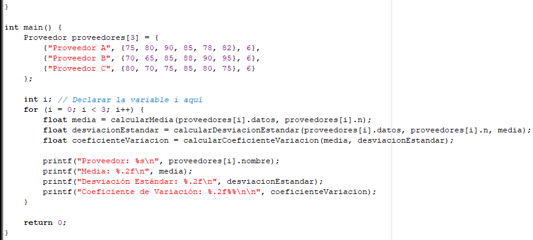

SERVICIO DE TELECOMUNICACIONES Y PROVEEDORES
Servicio de Telecomunicaciones y Proveedores a Analizar
El servicio de telecomunicaciones evaluado incluye servicios de internet, telefonía y televisión por cable. Se seleccionaron tres proveedores principales: Proveedor A, Proveedor B y Proveedor C. Los datos recolectados consisten en encuestas de satisfacción del cliente y reportes de rendimiento técnico.
PROCEDIMIENTO
calculo del promedio
El promedio se calculará utilizando la fórmula:
Media(μ)=
N
1
∑
i=1
N
X
i
Cálculo de la Desviación Estándar
La desviación estándar se calculará mediante:
σ=
N
1
∑
i=1
N
(X
i
−μ)
2
Cálculo del Coeficiente de Variación
El coeficiente de variación se calculará como:
CV=
μ/σ×100
SOLUCION
CODIGO

EJECUTABLE
EXPLICACION DE CODIGO
La estructura "Proveedor" almacena el nombre del proveedor, un arreglo de datos de rendimiento y el número de datos.
Se utiliza "#define MAX_DATOS 100" para definir el tamaño máximo de datos que cada proveedor puede tener.
FUNCIONES PARA CALCULOS ESTADISTICOS
"calcularMedia": Calcula la media de los datos.
"calcularDesviacionEstandar": Calcula la desviación estándar de los datos, tomando la media como parámetro adicional.
"calcularCoeficienteVariacion": Calcula el coeficiente de variación usando la media y la desviación estándar.
Se definen tres proveedores con sus respectivos datos de rendimiento
Se recorre cada proveedor, calculando y mostrando la media, la desviación estándar y el coeficiente de variación.
DIAGRAMA DE FLUJO
PRUEBA DE ESCRITORIO
proveedor A
Datos: {75, 80, 90, 85, 78, 82}
Media: 81.67
Desviación Estándar: 5.63
Coeficiente de Variación: 6.90%
proveedor B
Datos: {70, 65, 85, 88, 90, 95}
Media: 82.17
Desviación Estándar: 11.27
Coeficiente de Variación: 13.72%
proveedor C
Datos: {80, 70, 75, 85, 80, 75}
Media: 77.50
Desviación Estándar: 5.24
Coeficiente de Variación: 6.77%